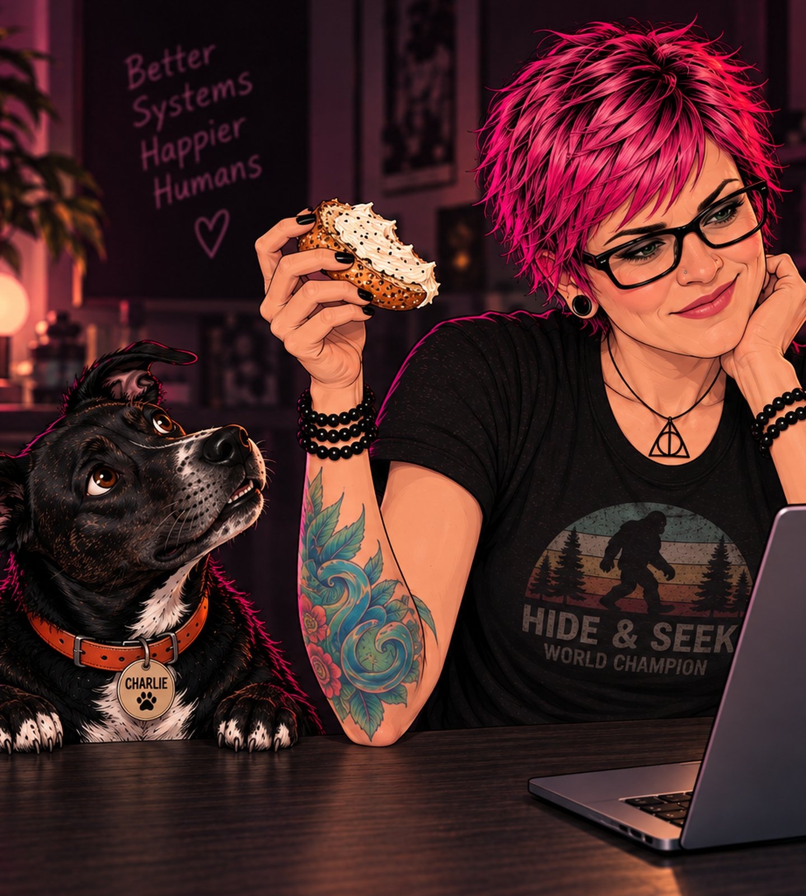

// field notes from the workshop
My name is Ernie. I'm a working bookkeeper and systems builder who documents what I'm actually building, learning, and really screwing up — in public, with zero smart people talk. Witness me break shit on purpose in real time, then laugh yourself hoarse as you watch me try to put it back together without pitching a hissy fit.
Think of it like a public notebook for a working adult who builds things, breaks things, and struggles to write it all down before she forgets wtf she was doing.
Short captures: what I'm building, testing, noticing, or learning. Posted when it's useful, not on a content schedule.
Practical notes on named projects — Ed, Diane, Kwisatz, and others — stripped of client info but honest about the process.
How a working adult uses technology without turning life into a content machine. Honest takes. No hype, no doom, no influencer energy.
Where the paper-and-code philosophy lives. How things break, how to fix them, and why documentation isn't optional.
// build log
An experiment in fucking shit up using terrifyingly advanced technology.
Eighteen charges posted as payments, one refund vanished, and the reconcile screen pre-ticked two grand that wasn't on the statement. Zero error messages. QuickBooks doesn't fail loud — it fails polite.
2026-09-15 · gitA month of committing before I asked what the word meant. Git is the camera, GitHub is Mom's fridge, and I'd been calling the camera the fridge the whole time.
// current projects
Named projects across automation, tools, and systems work. All grounded in industries I've actually worked in.
Make.com automation pipeline for trucking ticket processing and invoicing. Solving real billing chaos in a real industry. API-first design.
Personal AI assistant and wrangler — connected to everything, knows what I should be doing, designed to run my work life. A system, not a chatbot.
Umbrella for small utility tools built from real workflow pain. AntiHub lives here. More under development.
Utility software under Project Kwisatz. Not currently the main focus but not dead — will be revisited.
// github shelf
The public-facing code shelf: experiments, utility builds, site work, and systems that escaped the notebook long enough to get a commit history.
website · design system
Punk Rock Nerd Girl creative website and the PRNG design-system playground.
utility · qbo
Kwisatz utility code for QBO receipt search and workflow cleanup experiments.
assistant · systems
Personal assistant infrastructure for wrangling work, notes, and operational chaos.
// the human behind this
I’ve spent enough years inside small business disasters — blown-up bank feeds, mangled A/R, payroll written on the back of a grease-smeared scale ticket — that I stopped complaining and started building tools to fix the exact problems I’d already survived.
Gen-X is officially old now. Hooray. We are thrilled. But, we’ve put enough time in various fields to know where all the bodies are buried. Our entire lives, Gen-X have spent significant time and energy trying to figure out how to get shit done so we can do... nothing. Any shortcut that buys back actual fuck-off-able hours, we will find it.
I still write on actual paper. With actual pens. Sometimes even in cursive, on sticky notes I lose and spend twenty minutes on the floor searching for until my knees and back hurt and I need to lie down. But I also watched my dad build Frankenstein computers out of swap meet parts and sheer stubbornness. Not pretty. Completely functional. To eight-year-old me — absolute magic.
This is your invitation to watch me fail spectacularly. Pull up a chair; I’ll be here doing cool shit if you want to hang. If you, instead, want to continue being lame and not learn anything, that’s your choice. See you on the flip side. Tell your mom I said, “hi.” Peace.